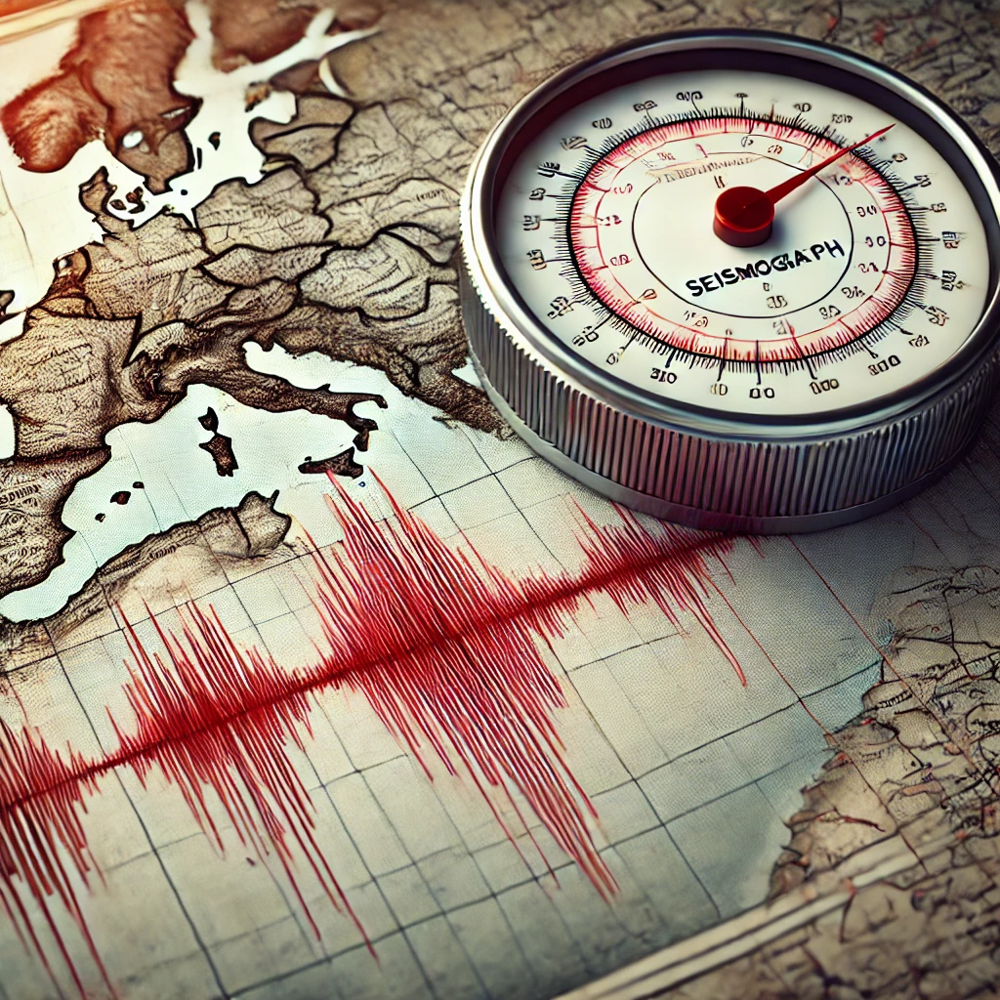

Sistem Peringatan Dini Gempa (EEWS): Teknologi Canggih untuk Mengurangi Risiko Gempa
Sistem Peringatan Dini Gempa (EEWS) adalah teknologi yang dirancang untuk memberikan peringatan sebelum gempa bumi mencapai suatu area. Sistem ini sangat penting dalam mengurangi risiko dan dampak yang disebabkan oleh gempa bumi, terutama di daerah yang rawan gempa.
Apa Itu EEWS?
EEWS merupakan sistem yang menggabungkan berbagai teknologi untuk mendeteksi aktivitas seismik dan memberikan peringatan sebelum gelombang gempa bumi yang merusak mencapai wilayah yang terdampak. Sistem ini bekerja dengan memantau aktivitas seismik menggunakan sensor-sensor khusus dan algoritma pemrosesan data untuk memprediksi dampak gempa.
Komponen Utama EEWS
- Sensor Seismik: Sensor ini mendeteksi getaran awal gempa bumi dan mengukur intensitas serta lokasi pusat gempa.
- Stasiun Pemantauan: Stasiun ini mengumpulkan data dari berbagai sensor seismik yang tersebar di lokasi strategis.
- Sistem Pemrosesan Data: Data yang dikumpulkan dari sensor diolah untuk menentukan intensitas dan waktu kedatangan gelombang gempa di lokasi tertentu.
- Jaringan Komunikasi: Sistem ini mengirimkan peringatan ke masyarakat dan infrastruktur melalui berbagai saluran komunikasi seperti pesan teks, sirene, atau sistem informasi publik.
Manfaat EEWS
EEWS menawarkan berbagai manfaat signifikan:
- Waktu Peringatan: Memberikan waktu beberapa detik hingga beberapa menit sebelum gelombang gempa mencapai lokasi, memungkinkan masyarakat untuk mengambil tindakan pencegahan.
- Pengurangan Risiko: Mengurangi risiko cedera dan kerusakan properti dengan memberikan waktu untuk mematikan fasilitas penting seperti gas dan listrik, serta evakuasi cepat.
- Perlindungan Infrastruktur: Membantu melindungi infrastruktur kritis seperti jembatan, bangunan tinggi, dan pabrik dengan memungkinkan tindakan pencegahan yang tepat.
- Peningkatan Kesadaran: Meningkatkan kesadaran dan kesiapsiagaan masyarakat terhadap risiko gempa bumi.
Studi Kasus: Implementasi EEWS di Jepang
Jepang adalah salah satu negara yang telah mengimplementasikan EEWS dengan sangat efektif. Dengan sistem yang terintegrasi secara nasional, Jepang dapat memberikan peringatan dini kepada penduduk dan industri sebelum gempa bumi besar terjadi. Sistem ini telah terbukti mengurangi dampak gempa bumi, seperti pada gempa besar Tohoku 2011, di mana peringatan dini membantu mengurangi jumlah korban jiwa dan kerusakan.
Kesimpulan
Sistem Peringatan Dini Gempa (EEWS) adalah teknologi yang sangat penting untuk melindungi masyarakat dan infrastruktur dari dampak gempa bumi. Dengan memberikan peringatan sebelum gelombang gempa datang, EEWS membantu mengurangi risiko dan meningkatkan keselamatan. Penerapan teknologi ini di berbagai negara menunjukkan potensinya dalam mengurangi kerugian akibat bencana alam dan memperkuat ketahanan masyarakat terhadap gempa bumi.